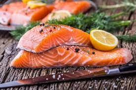

I am a curious and driven individual who is passionate about exploring the intersections of technology and creativity. With a background in computer science and a keen interest in the arts, y I thrive in bridging the gap between innovative problem-solving and artistic expression. By continuously seeking new challenge
Salmons have sleek, streamlined bodies that typically change color throughout their lifetimes. While in freshwater, Atlantic salmon are brown and spotted. When they migrate to the ocean, they turn silvery. Atlantic salmon are the largest salmon species, typically growing to just under four feet in length.
| name of a sport | reason why you recommend it | how many hours in an average week |
|---|---|---|
| Badmintion | reduces the fat | 3 hrs |
| Cricket | Improves our concertration | 4 hrs |
| Carrom | Improves thinking power | 3 hrs |
Site="https://css-tricks.com/snippets/wordpress/get-the-first-image-from-a-post">Get The First Image From a Post
function catch_that_image() {
global $post, $posts;
$first_img = '';
ob_start();
ob_end_clean();
$output = preg_match_all('//i', $post->post_content, $matches);
$first_img = $matches[1][0];
if(empty($first_img)) {
$first_img = "/path/to/default.png";
}
return $first_img;
}
if ( get_the_post_thumbnail($post_id) != '' ) {
echo '"a href="'; the_permalink();
echo '" class="thumbnailwrapper";
the_post_thumbnail();
echo '';
} else {
echo 'a href="'; the_permalink();
echo '" class="thumbnailwrapper"';
echo 'img src="';
echo catch_that_image();
echo '" alt="" ';
echo '';
}